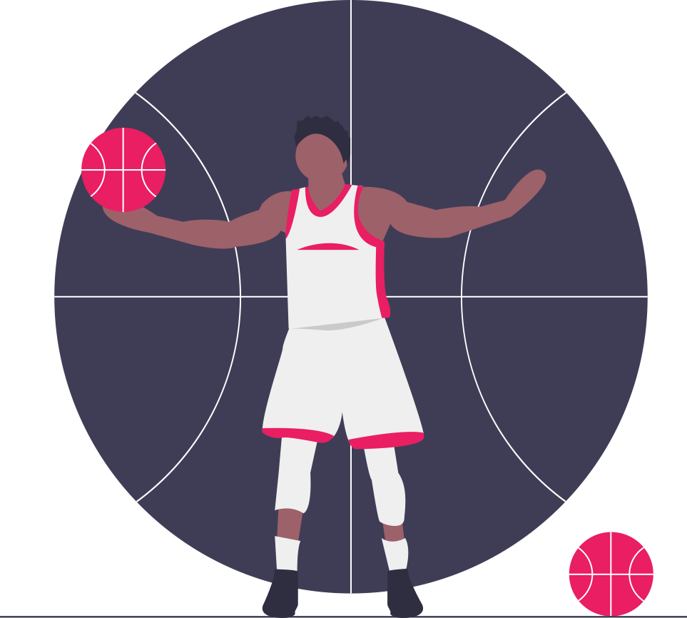

Requisitos para estudiar en los Estados Unidos
Titulo de educación secundaria (Bachillerato)
Superar con exito los examenes internacionales (SAT & TOEFL)

Tener el nivel deportivo mínimo requerido en el deporte elegido para la beca
Ser considerado apto para competir y recibir una beca (NCAA, NAIA, NJCAA)